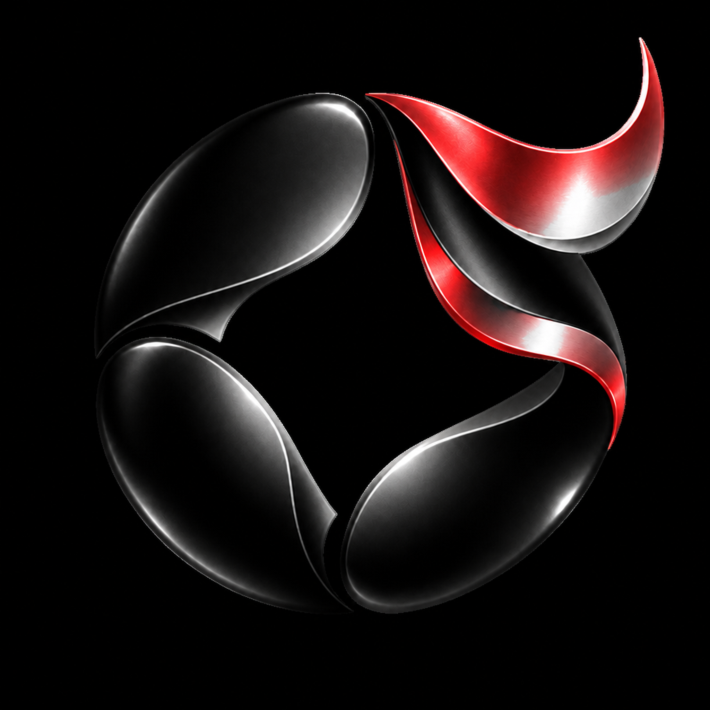
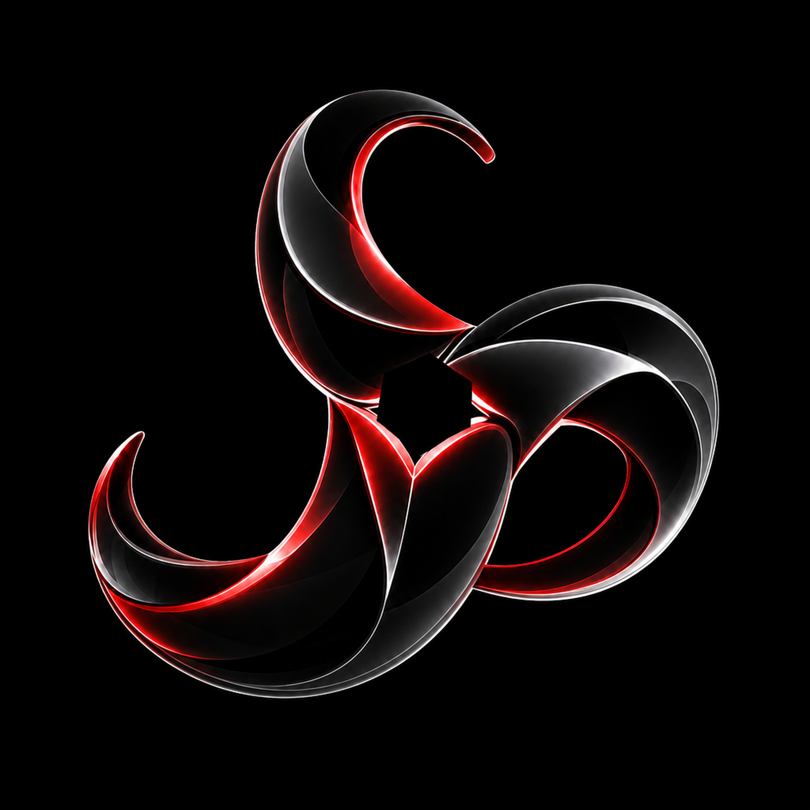

Official Windows installer
Eidovara-v1.0.0-Windows-x64-Setup.exe ???? 106,691,524 bytes (about 101.75 MiB) ???? SHA-256 F29A52F0495AB111A277780706E75ED616B6C236E25C3BDDF36E144ED5326675.

Soul Consciousness Studios presents ???? v1.0.0
Eidovara is a local-first Windows desktop app you install on your PC. The workspace lives on your machine. Soul is an optional assistant layer with persistent continuity, configurable personality, research, media, and tool support.
Current release ???? Windows 10/11 x64
The current Windows release is a full free Alpha. The published installer is Authenticode-unsigned, so Windows SmartScreen may warn. GitHub/Sigstore provenance records its build origin.
Eidovara-v1.0.0-Windows-x64-Setup.exe ???? 106,691,524 bytes (about 101.75 MiB) ???? SHA-256 F29A52F0495AB111A277780706E75ED616B6C236E25C3BDDF36E144ED5326675.
v1.0.0 includes explicit internet research, online health/status, media workspace and playback, updater infrastructure, and compatible provider connections while keeping local-first storage and offline operation.
Memory, continuity, relationship-aware adaptation, configurable personality, voice/presence, recovery, backups, and provider context remain part of the desktop architecture.
Current v1.0.0 experience
Apps, gaming tools, backups, settings, linked applications, and trusted launch controls stay on your PC.
Play user-selected media, discover properly sourced public audio/video, and retrieve cited information on explicit internet requests.
Use configurable tone, memory, continuity, voice, presence, and initiative????????or use the workspace without a remote model. Soul is software, not a consciousness claim.
Full free Alpha
Currently implemented workspace, compatible remote-model, keyed research, media, backup, update, RGB customization, and linked-app capabilities are included in the v1.0.0 free Alpha. Payments, checkout, and subscriptions are disabled.